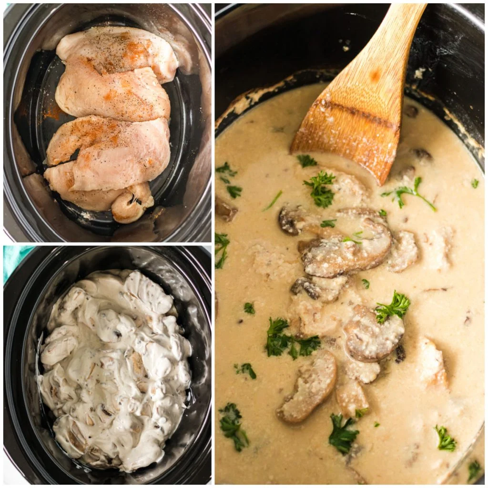

Crockpot Cream of Mushroom Chicken
Home

Photo Credit/Origin: persnicketyplates.com
Description
Crockpot Cream of Mushroom Chicken is a slow-cooked dish that features chicken breasts in a creamy sauce made from mushrooms, broth, and seasonings. The ingredients are combined in a crockpot and cooked on low heat for several hours, resulting in tender and flavorful chicken in a rich and comforting sauce. Serve over rice or with crusty bread for a hearty and satisfying meal.(credit: https://chat.openai.com/chat chatGPT Jan 2023)
Ingreidients
- 1 can 10.5 ounces cream of mushroom soup
- 10.5 ounces 1 can full Chicken Stock or water
- 1 teaspoon salt1
- ¼ teaspoon pepper
- ½ teaspoon dried thyme
- 1 ½ pounds boneless skinless chicken breasts thawed2
- 8 ounces sliced mushrooms
- 1 tablespoon cornstarch
- 2 tablespoons water
Steps:
- Spray a 5-7 quart slow cooker with nonstick cooking spray.
- Add soup to the crockpot insert, then fill the soup can with chicken stock or water and add it to the crockpot. Add the spices, then stir to combine. Place the chicken in the soup mixture and top with mushrooms.
- Cover and cook on high for 2-3 hours or low 4-6 hours, or just until chicken is cooked through.
- Remove chicken from the crockpot and let sit for a few minutes. While you’re waiting for the chicken to rest, stir together cornstarch and water and stir it into the crockpot mixture. Cover.
- Shred the chicken and return it to the sauce in the crockpot. Set to warm until ready to eat or eat immediately.
- Serving suggestions: rice and vegetables.
Recipe credit: crazyforcrust.com